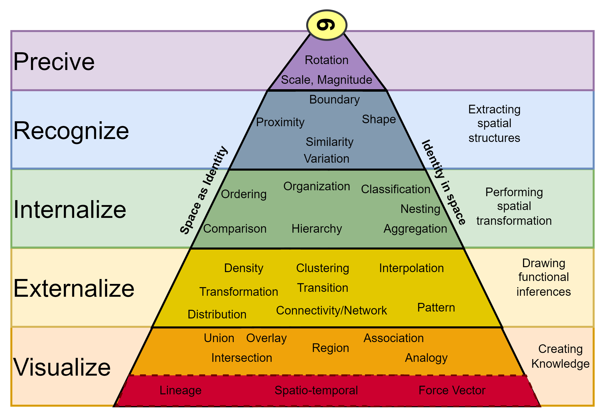

Critical spatial thinking
Defining “critical spatial thinking”
The following thoughts were funded in part by the Haskell Environmental Research Studies (HERS) 2020 program
The ability to think critically is widely considered to be a key facet of intelligence and a desirable cognitive capability. However, critical thinking, and by extension, critical spatial thinking, eludes a strict definition and often harkens back to the colloquial “I know it when I see it†phrase. Furthermore, efforts to create a standardized means of measuring one’s ability to think critically are extremely limited. This vagueness creates substantial friction when attempting to design, deliver, and assess the efficacy of a curriculum centered around the cultivation of these skills. Therefore, with the goal of improving spatial critical thinking skills of incoming graduate students in preparation to succeed in fields related to Science, Technology, Engineering, and Math, it is first worthwhile to define what precisely critical spatial thinking is.
There have been innumerable attempts to define what critical thinking is; one need only look to Wikipedia to find no less than 10 proffered definitions in use (“Critical Thinking†2023). Most succinctly, critical thinking is the process of analyzing facts to form a judgment. Most definitions of critical thinking also encompass communication in some form; a recognition that it is often not enough to be able to reach a conclusion, one must be able to articulate how and why they arrive at that result. Finally, this process is ideally a self-directed, self-disciplined, self-monitored, and self-correcting one; critical thinking is ultimately something that occurs at the scale of an individual and is an ongoing process which updates as new information is gained (Clarke 2019).
It would be a logical step to then say that critical spatial thinking is a subset of critical thinking with special attention paid to space. In perhaps the most authoritative and often cited body of work, the National Academics Press “Learning to Think Spatially†defines spatial thinking thusly (Learning to Think Spatially: GIS as a Support System in the K-12 Curriculum 2006):
A constructive amalgam of three elements: concepts of space, tools of representation, and processes of reasoning. Space provides the conceptual and analytical framework within which data can be integrated, related, and structured into a whole. Representations—either internal and cognitive or external and graphic, linguistic, physical, and so forth—provide the forms within which structured information can be stored, analyzed, comprehended, and communicated to others. Reasoning processes provide the means of manipulating, interpreting, and explaining the structured information.
This definition is purposely broad in a recognition that, although spatial thinking is a universal mode of thought, its manifestation often takes a distinct form depending on the practitioner’s discipline or the perspective with which they approach the problem. For instance, mind maps or organizational charts are a manifestation of spatial thinking not immediately obvious, or perhaps pertinent to a spatial curriculum in its modern academic form but are nonetheless a mode of thought dominated with concerns for space.
A more appropriate definition of spatial thinking to our original inquiry, presented by Penn State’s “The Learner’s Guide to Geospatial Analysis†defines spatial thinking in terms of attributes a practitioner exhibit (“The Learner’s Guide to Geospatial Analysis (V1.1) The Learner’s Guide to Geospatial Analysis†n.d.):
An expert spatial thinker visualizes relations, imagines transformations from one scale to another, mentally rotates an object to look at its other sides, creates a new viewing angle or perspective, and remembers images in places and spaces.
This definition provides some insight into the desirable characteristics of a spatial thinker but lacks any structure of thought. It also woefully underrepresents the depth spatial skills may take. In the pursuit of summarizing these into a concise table, Lee and Bednarz performed a longitudinal literature review and identified common concepts of spatial thinkers from some of the most prominent spatial thinkers of the time (Lee and Bednarz 2012). Their findings, reproduced below, show several commonalities. More comprehensive efforts to identify these core components (sometimes referred to as modes, or competencies), was undertaken by Zwartjes et al in 2017 (Zwartjes, n.d.).
| Gersmehl and Gersmehl (2007) | Golledge et al. (2008) | Janelle and Goodchild (2009) |
|---|---|---|
| Condition | Identity | Objects and Fields |
| Location | Location | Location |
| Connection | Connectivity | Network |
| Distance | Distance | |
| Scale | Scale | |
| Comparison | Pattern Matching | |
| Aura | Buffer | |
| Region | Adjacency, Classification | Neighborhood and Region |
| Hierarchy | ||
| Transition | Gradient, Profile | |
| Analogy | ||
| Coordinate | ||
| Pattern | Pattern, Arrangement, Distribution, Order, Sequence | |
| Spatial Association | Spatial Association, Overlay/Dissolve, Interpolation | Spatial Dependence, Spatial Heterogeneity |
| Projection, Transformation |
A reproduction of Table 1 from (Lee and Bednarz 2012), demonstrating the formulation and overlap between three prominent realizations of the core concepts of spatial thinking.
Redefining Critical Spatial Thinking
These are all far greater thinkers than myself, and it seems a bit presumptuous that anyone should care to read my thoughts on the topic, but here we are. These incomplete definitions of spatial critical thinking and the various iterations of core concepts that lack a standardized set of competencies to refer to are the result of common shortfalls. The first is the rigid nature of classification itself. As with many anthropogenic and natural phenomenon, it is not immediately apparent that the nature of spatial thinking is one that can be distilled into finite, functional, and independent categories. Often these classifications become a semantical exercise far removed from any practical application. The second is the fluid nature of the discipline and its place in academia. The department of geography – derived from the Greek word geographia and literally translated as “to describe or write about the world†– has undergone several major restructurings and can these days be found alongside environmental science, computer science, geoscience, urban planning, and anthropology, just to name a few (AAG 2019).
The most recent of these trends has followed the rise of the computer, and with it the appearance of a new subdivision of geography: geographic information science. I’ll touch on the role of this branch in the next section, but regardless of the role it plays, its introduction has been as paradigm shifting to the discipline as the computer itself has been to humanity. This digital arm of geography wreaked havoc on the strict categorization of the geographic discipline, sometimes lumping what would traditionally fall under computer science into geography or fracturing these concepts into standalone geoinformatics departments. This digital revolution also facilitated time-space compression, allowing a quantitative treatment of a wide range of spatio-temporal phenomenon and more prominently accentuating the intertwined nature of space and time (Warf 2013). Given these trends and the most recent categorization and organization of GIScience within the academic domain, the time appears ripe to offer up my own take on a functional definition of critical spatial thinking:
Critical spatial thinking is the ability to observe and form a query; place that query in the context of the core spatial concepts; devise an appropriate means of testing a hypothesis; executing that test accurately; communicate those results in textual, verbal or visual form; and objectively reflect on that process.
This definition blends portions of the previously cited critical spatial thinking definitions and the scientific method as a means of structuring the process of thinking and injecting pathways of self-reflection and correction into the process.
Alongside this new definition, I propose a new set of spatio-temporal skills, based on the modern state of the geographic discipline (newly bound to computation and with explicit consideration of the temporal) and a refactoring of the above skills into distinct categories and hierarchies, the existence of which was originally proposed by Perdue et al. as shown in Figure 2A (“Dr. Amy Lobben S3C†n.d.). These hierarchies are a recognition that some of these “fundamental†spatial skills are assemblages of other spatial skills (e.g. In identifying the change of an area over time, individuals start with a perception of the phenomenon and identifying boundaries and the proximity and classification of that space. They then need to cluster that space into distinct regions, and place that region along the continuum of its history, Figure 2B.)

While there are many concepts which appear self-evident, a few of these more notable ones include:
- Identity: One of the core concepts consistent across the three reviews, this has to do with the nature of the entity in question. Goodchild frames this in terms of GIS, calling them object and fields, or the attributes that that object possesses (Goodchild and Janelle 2010). These attributes are typically consistent across a set but can also take on a parent-child relationship as with object-oriented programming.
- Location: Another one of the core concepts consistent across the three reviews, this concept pertains to how one might attempt to define a location. Although at first glance one might assume that location is an attribute of identity, there is no single frame off which to determine how one might locate a point in space. See Figure 3, a reproduction of Figure 1 from (Gersmehl and Gersmehl 2007), for an excellent example of this concept.
- Network: A concept identical in two of the three realizations above, network refers to the topological relationship and connectivity (or lack thereof) between objects and is dependent on the “mode†of transportation (e.g. via car or by foot).
- Distance: Another concept identical in two of the three realizations above, distance refers to the quantization of space, and is always relative with respect to location and origin.
- Scale: Another concept identical in two of the three realizations above, here scale generally refers to the scale of thought. As quoted from Golledge, Marsh, and Battersby (2008):
Montello (1993) (Montello (1993) argued that four scales of spatial thinking can be determined. The first (micro or body scale) covers the scale of nanotechnology, brain cell analysis, and spatial examination from the microscopic to the arrangement of parts of the body. Figural scale covers the immediate vicinity of the body, extending to the edge of the tactile (reach) domain. Environmental scale includes the environment that can be visually perceived, usually from single viewpoints, and represents the space of everyday bodily activity. Geographic scale includes areas and places that cannot be perceived from a single viewpoint, including occluded and distant areas.
Although we could certainly debate the precise definition of these breaks in scale, the concept remains essential to spatial thought more than 25 years later.
- Pattern: A concept spread across both lists, this concept is the process of identifying order, repetition, distribution, and hierarchy of space and objects.
- Scope: A concept rephrased across the three representations, and further refined here, I take neighborhood, region, adjacency, and spatial association to refer to the same concept, the scope of the operation. Most famously ascribed by Tomlin (Tomlin 2013), within a Geographic Information System operations can be local, focal, zonal, or global and are all used to define the nature of the window of operation.
- Transformation: Here I refer to as the concept of manipulating, rotating, and warping an object in 2 or three dimensions.
- Representation: Here I refer to the ability to visualize and represent these objects in mental, visual, or digital space. Adding representation as a core concept neatly categorizes map reading and making, as well as categorization and classification, which were omitted or under-represented in the previous iterations of core concepts.
- Lineage: A new concept not included in the above, and not in the strictest sense relevant to spatial, it would be a missed opportunity to reformulate the core spatial concepts without expanding them to include time. Indeed, this temporal aspect was alluded to in Zwatjes et al.’s treatment of the core spatial concepts (Zwartjes et al., n.d.). Spatio-temporal phenomena (think ENSO oscillations, land use history, ect.) have recently seen an explosion of interest due in part to the increased length of earth observation systems. Here the word lineage is used both to encapsulate the ideas of vector travel path (cars have a location, direction, and momentum), and the use of space (this used to be a mall and is now a distribution facility).
What is notable but not explicitly stated in these definitions is that they all hinge on the assumption that the thinker has some foundational knowledge and is spatially literate. While not strict prerequisite, it is difficult to be able to think critically without having some base with which to compare new information to; and the ability to think critically without being able to ingest spatial information (spatial literacy), is an exceedingly rare occurrence (Patterson, Reeve, and Page 2003). Therefore, if the goal is to cultivate critical spatial thinking skills, individuals must develop some foundation in spatial knowledge and spatial literacy. In that regard, GIS has a recognized capacity to facilitate that acquisition (Abbott, n.d.).
Defining GIS in the Context of Spatial Thinking
Before attempting to describe how GIS can be used to teach spatial thinking however, it is worth dissecting what the acronym GIS actually stands for. There are generally two interpretations for this acronym: Geographic Information Systems, and Geographic Information Science. Although rarely taught as such, Geographic Information Science – the scientific discipline that studies the techniques to capture, represent, process, and analyze geographic information – has quite a lot in common with data science, which itself is a subset of computer science. GISystems are a realization of that science in the form of a tool. This spectrum between tool, toolmaking, and science was first vocalized by Goodchild, who notes that these borders are inherently fuzzy. In conceptualizing it this way, we also imply that there is an endpoint in the spectrum; a final destination after which there is no real purpose in advancing critical spatial thinking skills. While it is true that there are diminishing effects to advancement, learning is a lifelong journey and not simply a destination, and thinking is an activity which should be performed on a daily basis. Hereon in, I’ll differentiate between the two when applicable, but the scope of this report is largely concerned with discussing the use of GISystems Wright, Goodchild, and Proctor (1997).
The Role of GIS in Developing Spatial Literacy and Critical Thinking Skills
Spatial literacy has received comparably less interest within the educational domain than its reading, writing, and mathematical counterparts. As Goodchild and Janelle point out, this may be the result of the instinctive nature of spatial intelligence; spatial awareness was key to survival from an evolutionary standpoint and is presumed to be acquired at such an early age that it requires no attention from the education system (Goodchild and Janelle 2010). This is contrasted however, by the increasing lack of spatially literate citizens. To address these deficiencies, and to meet marketplace demands, many educational programs have turned to teaching GISystems in their curricula. But how GIS can best be used to teach critical spatial thinking skills is still debatable. Given the scope, time constraints, vagueness, and lack of research addressing this question, particularly at the collegiate level, I draw much of this section from anecdotal evidence and experience.
While there is no standardized curriculum design to teach GIScience, there are two primary means of introducing GIS to students. One can take a graphical user interface (GUI) based approach to introducing GIS or take a more programmatic approach. GUI GIS includes programs such as Google Maps and Earth, QGIS and ESRI Arc products, whereas programmatic approaches to GIS include Python, R, JavaScript, and Matlab. There are tradeoffs to each, and it’s worth peeling them apart.
Anything built in a digital system is inherently less free and less flexible than we can conceptualize internally. These limitations are not necessarily even imposed by hardware, they can often simply be too unwieldy to implement in a digital environment. Likewise, a GUI driven implementation will always have fewer degrees of freedom than a programmatic implementation. This loss of flexibility is further compounded by the nature of a GUI driven system in general; one cannot expose too many of the underlying parameters without overwhelming the end user. Finally, although not limited to GUI programs, many of the more advanced GUI driven systems must be paid for, creating additional barriers of access and raising ethical and moral issues related to academia teaching a private company’s software and building dependence on computational crutches.
Programmatic approaches, in contrast, require the ability to program which takes quite a while to build competency in and progress is not particularly obvious when first starting. Furthermore, it is often harder to find motivation in programming, whereas GUI driven systems provide immediate feedback and a tangible goal to visualize. I find it far easier to inspire the desire to program when individuals have a self-developed goal in mind; the learning will follow. However, as a skilled GIScientist must learn to program eventually, and in that respect, a programmatic approach to learning GIS will take time in the long run. A strictly programmatic approach also foregoes the process of learning common interface accesses paths of a GIS GUI, but such things are trivially straightforward to learn and by the time one has acquired the ability to think critically, they also likely possess the capabilities for self-directed learning.
These differences in approach are summarized in the generalized conceptual diagram shown in Figure 4. Users who start on the GUI driven track rapidly acquire skills in spatial literacy, but progress quickly plateaus while acquiring computational skills. This is due in parts to the abstraction GUI driven programs provide over the complexities of the computational domain, and the obfuscation these platforms impose by obscuring parameters and limitations of GUI platforms to design custom tools. Therefore, these users need to spend additional time learning how to program, and in some cases unlearning poor habits that GUI driven tools can create. Eventually, users overcome this learning curve, and move on to become critically spatially literate. In contrast, users who start learning GIS programmatically have a much slower rise to spatial literacy as they overcome the early hurdles associated with programming and visualization, and consequently acquire spatial literacy later than their GUI taught counterparts. However, they have none of the later learning curve, and rapidly transition from spatial literacy and using GIS as a tool to toolmaking. Consequently, they acquire critical spatial and data literacy somewhat sooner.
One more critical aspect left unaddressed between these two approaches to teaching GISystems is the retention rates and success (in terms of the number of students who matriculate and go on to practice “good†GIScience). To provide the most accessible experience and archive possible, this site and the classes within will include approaches to labs using multiple different approaches ranging from proprietary, closed source industry standards like ESRI (ArcMap and ArcPro) and cloud native solutions (Google Earth Engine) as well as Free and Open Source alternative including QGIS, Python, R, and other toolings from across the FOSS community. Although I obviously hope you become a seasoned GIScience practitioner, my goal is that you leave with a deeper appreciation and understanding for the nuances of spatial analysis and phenomenon, and that you gain practical problem solving skills you can deploy in your own careers.